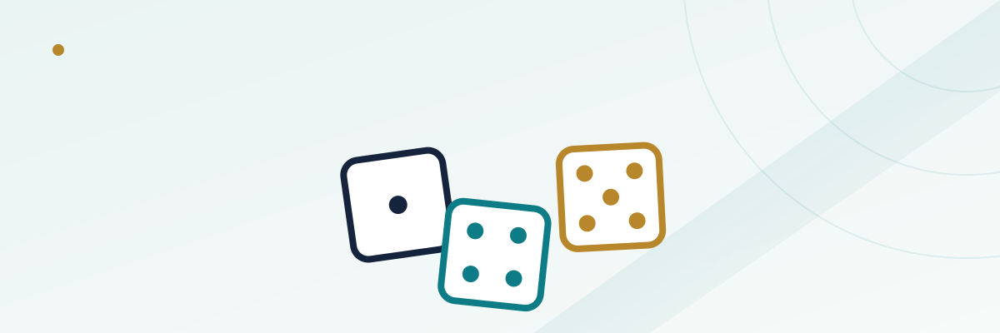

Sic Bo's Single-Number Bets: Why They Carry Some of the Worst Odds in the Casino

Most casino games keep their house edge in a fairly narrow band no matter which specific bet you place — blackjack might range from 0.5% to 2% depending on the rules, roulette sits at a flat 5.26% on nearly everything at an American wheel. Sic Bo is different. It's a single table game where the house edge on different bets ranges from roughly 2.8% up to more than 33%, and almost nothing on the layout tells you which is which. That spread is the whole story of this guide.
In this guide
How Sic Bo works, briefly
Sic Bo (the name translates roughly to "precious dice" from Cantonese) is played with three standard six-sided dice, shaken either in a physical cage or, at an online casino, resolved by a certified random number generator that simulates the same three-die roll. Players bet on the outcome before the roll — on the total of all three dice, on specific combinations of two or three dice, on a single number appearing, or on broad categories like whether the total will be high or low. Once bets are placed, the dice are rolled (or the RNG resolves), and every bet on the layout is settled simultaneously off that single roll.
The layout looks intimidating the first time you see it — often thirty or more distinct betting areas on one table — but the underlying math is simple probability across 216 possible three-die outcomes (6 × 6 × 6). Every bet's true odds and payout can be worked out directly from how many of those 216 combinations satisfy it, and that's exactly how the house edge on each bet gets calculated.
Small and Big: the closest thing to a fair bet on the table
The two most commonly recommended bets in Sic Bo are Small (the total of the three dice lands 4-10) and Big (11-17), each typically paying even money (1:1). Of the 216 possible combinations, 108 produce a total in the Small range and 108 in the Big range — except both bets lose automatically on any triple (three matching numbers, like 2-2-2 or 5-5-5), which removes 6 of those combinations from each side's winning pool while the bet still loses on them.
| Bet | Payout | Winning combinations | House edge |
|---|---|---|---|
| Small (4-10) or Big (11-17) | 1:1 | 108 of 216, minus triples | ~2.78% |
That 2.78% is roughly in the same neighborhood as a double-zero roulette bet on red or black, and it's by far the lowest house edge available anywhere on a standard Sic Bo layout. It's also the bet most guides point beginners toward for exactly that reason — not because it's exciting, but because it's the one corner of the table where the math is closest to fair.
Totals bets: a middle tier with real variation
Between the low-edge Small/Big bets and the high-edge single-number bets sits a middle tier: betting on the exact total of all three dice, from 4 up to 17. These pay out on a sliding scale — a total of 10 or 11 (the most statistically common outcomes, each achievable 27 different ways) pays a relatively modest 6:1 at many tables, while a total of 4 or 17 (achievable only 3 ways each, since 4 requires 1-1-2 in some order and 17 requires 6-6-5) pays a much larger 50:1 or 60:1 depending on the house's paytable.
| Total bet | Ways to make it (of 216) | Typical payout | House edge |
|---|---|---|---|
| 10 or 11 | 27 | 6:1 | ~12.5% |
| 5 or 16 | 6 | 17:1 (varies) | ~13-17% |
| 4 or 17 | 3 | 50:1 or 60:1 (varies) | ~13-30% depending on paytable |
The wide range in that last row isn't a typo — it's a direct consequence of the fact that different casinos pay different odds on the same bet. A 4-or-17 total paying 50:1 carries a meaningfully worse house edge than the same bet paying 60:1 at a different table, even though the actual probability of winning is identical in both cases. This is one of the very few corners of Sic Bo where shopping between casinos or tables genuinely changes your expected loss rate on an otherwise identical bet.
Combination and single-number bets: where the edge explodes
The worst house edges on the table live in two families of bets: specific triples (all three dice showing the same number, like 4-4-4) and single-number bets (betting that a chosen number appears on at least one of the three dice).
A specific triple has just 1 way to occur out of 216 possible rolls — true odds of 215:1 against — but it typically pays only 150:1 or 180:1 depending on the house. That gap between true odds and actual payout is enormous, and it's what produces a house edge north of 30% on this single bet, by a wide margin the worst number on the entire layout.
Single-number bets look tamer by comparison but still carry a real bite. Betting that your chosen number shows on exactly one die pays 1:1, on exactly two dice pays 2:1, and on all three (the specific triple, functioning as a bonus inside this same bet type at many tables) pays 3:1. Worked out over all 216 combinations, this bet's house edge lands around 7.9% — noticeably worse than Small/Big, though nowhere near as bad as a specific triple.
| Bet | Typical payout | House edge |
|---|---|---|
| Single number (1, 2, or 3 dice matching) | 1:1 / 2:1 / 3:1 | ~7.9% |
| Specific double (two dice show chosen pair) | 10:1 (varies) | ~18-19% |
| Specific triple (all three dice match) | 150:1 or 180:1 | ~30-33% |
Put plainly: moving from Small/Big to a specific-triple bet takes you from roughly the same edge as an even-money roulette bet to worse than the single-zero-wheel version of betting on a lone number — while feeling, to a new player scanning the table, like just another box with a bigger number attached to it.
Why the payout tables trick people into single-number bets
Sic Bo's layout is designed the same way lottery tickets and slot jackpots are — the biggest, most visually prominent numbers on the felt are the payouts for the worst bets, because a 180:1 or 60:1 payout is a far more exciting thing to look at than a flat 1:1. New players naturally gravitate toward the boxes promising the biggest multiplier, without a way to see, just from looking at the table, that the true odds of hitting that box are worse than the payout compensates for.
This isn't unique to Sic Bo — it's the same psychological pull that makes big progressive jackpots and long-shot exotic bets feel more appealing than they're mathematically worth — but Sic Bo concentrates an unusually wide range of that effect onto a single table, since the same felt has both some of the fairest and some of the worst bets in the casino sitting a few inches apart.
A practical way to play the table
If you're going to play Sic Bo at all, the bets worth actually placing are Small, Big, and — if you want a bit more variance without wrecking your edge — the 10-or-11 totals bet, since it carries the mildest edge among the total bets while still paying more than even money. Single-number bets are playable in small amounts if you're specifically after the higher variance and understand the roughly 8% edge you're accepting, but combination and specific-triple bets are difficult to justify on math alone; they exist mainly to give the table its lottery-ticket appeal.
If you're weighing Sic Bo against other table games for where to spend a casino bankroll, see our guides to craps basics and house edge across casino games for how it stacks up, and our casino bankroll management guide for how to size bets on a high-variance game like this one relative to your overall budget.
Frequently asked questions
Is online Sic Bo fair compared to a physical table?
Licensed online casinos use certified random number generators that are independently tested to produce the same statistical distribution as three physical dice, so the true odds behind each bet are identical. What can differ between operators is the payout table on higher-variance bets, which is where actual house edge differences show up.
Why do house edges vary so much on the same game?
Sic Bo's bets aren't priced off a single flat margin the way roulette's are — each bet type has its own true probability calculated from the 216 possible dice combinations, and casinos set payouts that leave varying amounts of margin depending on the bet. Long-shot bets with big advertised payouts tend to carry the largest gap between true odds and actual payout.
Can I combine Small/Big with other bets to hedge?
You can bet multiple boxes in the same round, but combining bets doesn't change the underlying house edge on each individual wager — it only changes the shape of your variance. Stacking a low-edge bet with several high-edge ones still leaves you paying the high edge on the portion of your money riding on those bets.
Is Sic Bo the same game as Chuck-a-Luck or Grand Hazard?
They're closely related dice games with overlapping bet types and similar house edges on comparable bets, but the specific betting layouts, available bet types, and regional naming conventions differ. If you see either name at a casino, the same core principle applies: check which specific bets carry which edge before wagering.